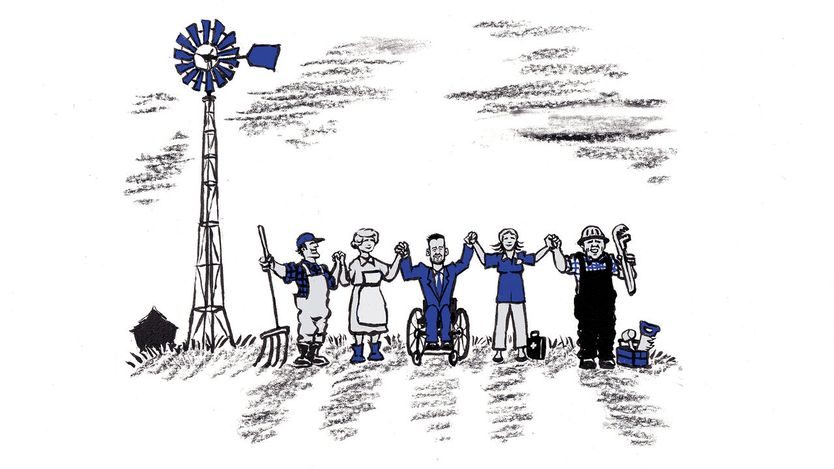

民主党人重新发现：什么样的进步政治才吸引人
Democrats are rediscovering what an appealing politics of progress looks like
艾奥瓦等州的强劲候选人说明，这个党怎样才能避开灭顶之灾

- 哈金1990年推动通过的《美国残障人士法》是靠共和党盟友才过关的，这一点被用来说明：能真正做成立法的人，往往不是声音最大的那个。
- 图雷克和埃尔-赛义德的政策其实相差不大，都主张向富豪征税、挑战大公司、提高最低工资；真正的分歧在做事方式，一个要合作，一个要对抗。
- 民主党在艾奥瓦、阿拉斯加、堪萨斯等传统红州重新有戏，因为人口正从纽约、加州流向佛州、得州，2030年人口普查后国会席位会跟着搬走。
- 连共和党现任议员也在竞选里刻意不提特朗普，改称自己是「为本地而战的两党斗士」，说明今年真正稀缺的是中间选民的信任。
自2015年参议员汤姆·哈金（Tom Harkin）连任五届后退休以来，艾奥瓦州的民主党人日子一直不好过。共和党人拿下了原本由两党分治的州政府和国会代表团，特朗普三度赢下艾奥瓦州，最近一次领先超过13个百分点。如今86岁的哈金耳朵有点背、身体也虚弱了，却又回到竞选集会上，为一批在各级选举中发起出人意料强劲挑战的民主党候选人站台。
和别处一样，艾奥瓦州的很多竞选活动既愚蠢又难看。创纪录的资金被砸进广告，把电视和网络塞满恶意且误导性的说法。哈金的出现算是一剂解药，不只是因为他依旧和蔼、说话直白。当他介绍乔希·图雷克（Josh Turek）出场时——图雷克正在竞选哈金原来的参议院席位——图雷克摇着轮椅上前接过麦克风，这一幕让人动容地想起：所有这些政治活动本该是为了什么。
哈金是那部里程碑式民权法案的推动者，该法禁止歧视残障人士。图雷克天生脊柱裂，1990年《美国残障人士法》（ADA）通过时他11岁。他把哈金称为自己的政治英雄，并说如果没有这部法律，「我得到过的每一个经济机会、职业机会、教育机会都不会存在」。和哈金本人一样，图雷克也急于补上一句更要紧的话：哈金当年是靠共和党盟友才让法案通过的。「这是我们愿意合作时能做到什么的一个绝佳例子，」图雷克说。
这一观察还照亮了另一件事：民主党内部正在进行的这场争斗——中期选举之后大概会更加激烈——并不只是「进步派」与「温和派」之间的政策之争，而是关于「如何取得进步」的不同理论之间的竞争。
哈金并不打算放弃「进步派」这个标签。在他看来，他与「我的好朋友」、火气很足的左翼领袖伯尼·桑德斯之间的许多分歧属于风格问题，甚至只是用词问题，而非原则问题。他称赞图雷克不仅「有一份进步派议程」，而且懂得「如何把它推进下去」。哈金没有点出的是：桑德斯参议员拿不出任何可与ADA相提并论的立法成就。
哈金离开参议院之后，「进步派」这个词变得锋利了许多。图雷克自称温和派。但和哈金一样，他也认同自己是「草原民粹主义者」，承袭的是那个激进农业运动的传统——当年那场运动把小农和工会成员联合起来，对抗镀金时代的垄断势力。当图雷克谈到向亿万富翁征税、挑战大公司、提高最低工资时，他听起来和密歇根州参选人阿卜杜勒·埃尔-赛义德（Abdul El-Sayed）没什么两样——后者是本党民粹左翼最知名的参议院候选人。
密歇根和艾奥瓦的两位候选人在政策上有重要分歧，尽管这些分歧有时也会模糊。图雷克说反对生理男性参加女子体育比赛，埃尔-赛义德则没有表态，说这类决定应交给体育联盟。与图雷克不同，埃尔-赛义德想废除移民与海关执法局（ICE），但他同时说支持执行移民法、守住边境。埃尔-赛义德想要「全民联邦医疗保险」，但也说愿意支持图雷克主张的那种逐步扩大公共医保覆盖的做法。埃尔-赛义德想切断对以色列的军事援助；图雷克则主张对这类援助施加严格限制。
但两人在风格上的差别十分鲜明。埃尔-赛义德好斗、急躁，对党内同僚也是如此。他曾对捐款人说，他可以把跟自己意见不同的民主党人「挑一个挂上长矛示众」，指的是宾夕法尼亚州参议员约翰·费特曼。图雷克连跟共和党人吵架都不愿意。埃尔-赛义德说特朗普应该被弹劾，图雷克对此「毫无兴趣」。「我们得回到国家优先于党派，」他说。桑德斯最可能的接班人、众议员亚历山德里娅·奥卡西奥-科尔特斯最近说，埃尔-赛义德若获胜将证明「任何人都能在任何地方赢」。这话不对。和图雷克一样，埃尔-赛义德选情胶着，也可能输。但密歇根州民主党手握州长职位和两个参议院席位，本该没这么难。
今年让民主党重新具备竞争力的，是那种更具包容性的风格而非好斗风格——不只是艾奥瓦，还有阿拉斯加、堪萨斯、南卡罗来纳和得克萨斯。当民主党转向2028年总统竞选时，这才是应该效仿的模式。美国人一直在从纽约、加州这类民主党主导的州迁往佛罗里达、得州这类共和党州。2030年人口普查之后，国会席位和选举人票会跟着走。扩大自己的选举版图，对民主党正在变成生死攸关的事。这看似矛盾，在特朗普极化执政的最后两年里也肯定不容易，但作为一个有生命力的政党，民主党必须变得不那么党派化。
今年选情吃紧的共和党人也在学他们版本的那一课。图雷克的对手、众议员阿什利·辛森自称「为艾奥瓦而战的两党斗士」。10月25日在曼彻斯特的集会上，她几乎没有提到特朗普。她说，美国人「觉得自己被美国梦拒之门外」，因为「坦白说，两党都有很多人」已经「忘了艾奥瓦人有多辛苦」。这个竞争异常激烈的选举季，全美最健康的结果会是一种两党的觉醒：大多数选民想要的是更少的党派之争、更多的实际进步。■